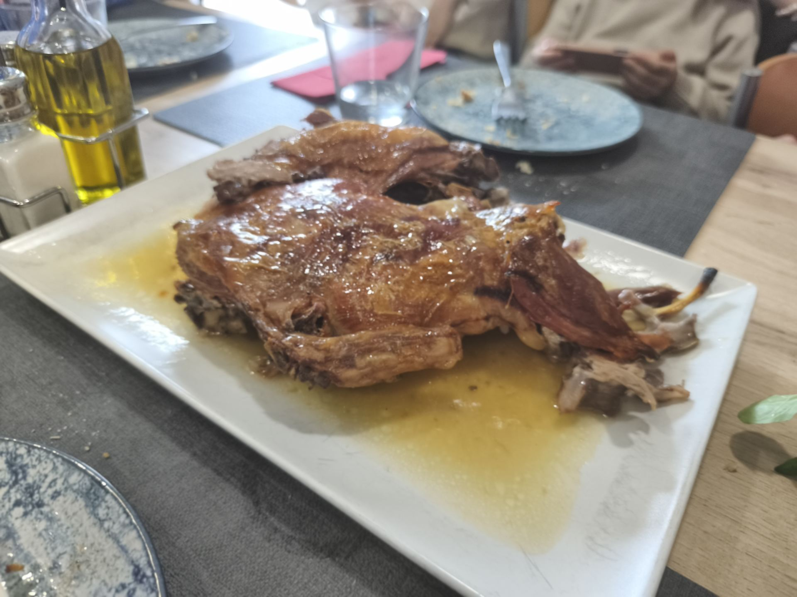

Arroz con bogavante
Una de las opciones más demandadas para comidas especiales, con sabor intenso y presentación perfecta para compartir.
En Piel Canela Gastrobar preparamos arroces por encargo en Valladolid y lechazo asado para quienes buscan una comida especial, abundante y pensada para compartir.
Estamos en Calle Hípica 13, junto al Paseo Zorrilla, una ubicación cómoda para comidas familiares, reuniones de amigos, celebraciones y grupos.

Nuestros arroces se preparan bajo reserva para cuidar el punto, el sabor y la cantidad. Son una opción ideal para quienes quieren comer bien en Valladolid sin renunciar a una comida casera y especial.
Una de las opciones más demandadas para comidas especiales, con sabor intenso y presentación perfecta para compartir.
Paella de marisco, arroz negro, paella valenciana y arroz a banda, siempre por encargo y adaptados al número de comensales.
El lechazo asado por encargo es una opción perfecta para celebraciones, comidas familiares y grupos que buscan un plato tradicional, sabroso y pensado para disfrutar sin prisas.
Recomendamos reservar con antelación para confirmar disponibilidad, número de personas y hora de llegada. También puedes llamarnos al 983 475 132 o al 662 467 435.

Si buscas un restaurante para comer arroz por encargo, lechazo asado o raciones abundantes en Valladolid, Piel Canela Gastrobar es una opción cercana, cómoda y pensada para compartir.

Mesas para amigos, familias y grupos.

Calle Hípica, junto al Paseo Zorrilla.
Paellas y arroces especiales para compartir.
Ideal para comidas familiares y celebraciones.
Sí, preparamos arroz con bogavante, paella de marisco, arroz negro, paella valenciana y arroz a banda bajo reserva.
Recomendamos llamar o reservar con antelación para confirmar disponibilidad, número de personas y hora.
Sí, ofrecemos lechazo asado por encargo, ideal para celebraciones, familias y grupos.
Estamos en Calle Hípica 13, Valladolid, junto al Paseo Zorrilla y cerca de El Corte Inglés.
📍 Dirección: Calle Hípica 13, 47007 Valladolid
📞 Teléfono: 983 475 132 · 662 467 435
🍽️ Especialidad: arroces por encargo, lechazo asado, raciones caseras y cocina para compartir.